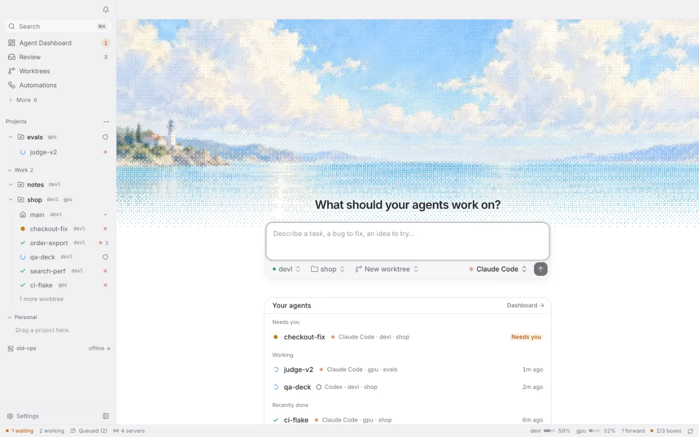
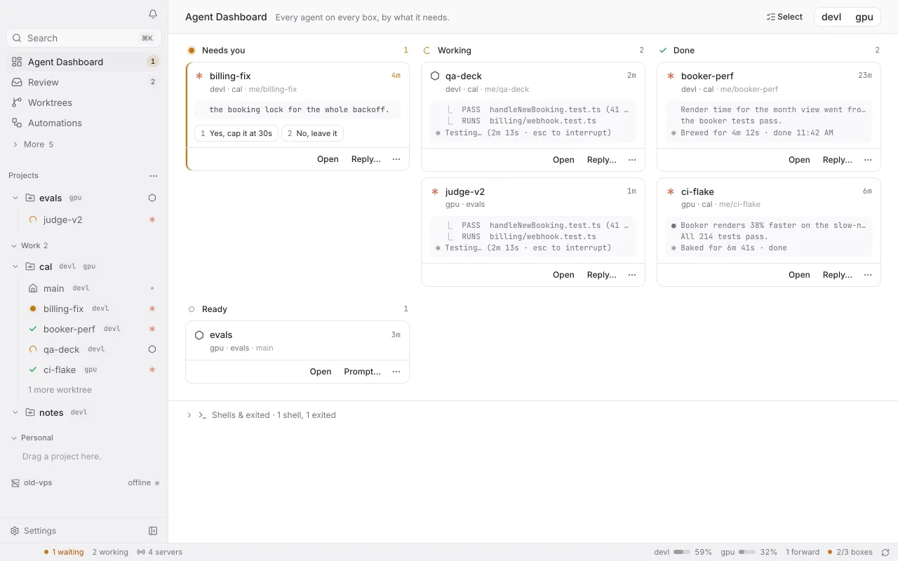
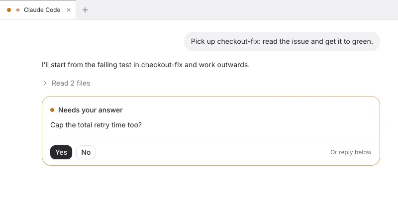
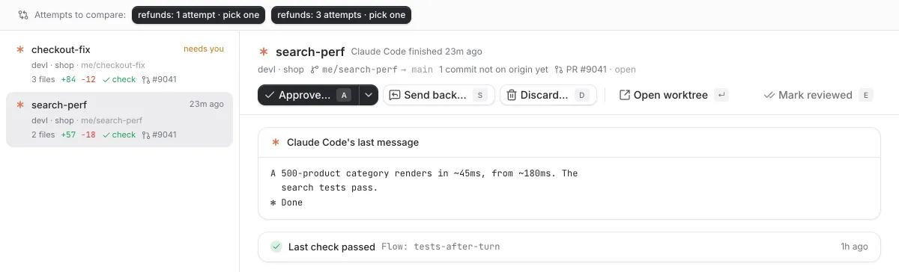
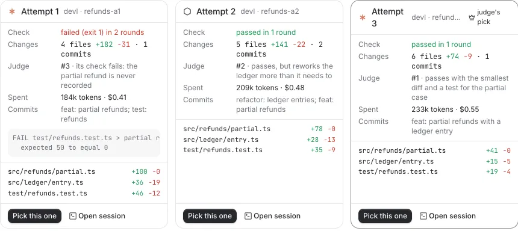

Agents that keep working when your laptop sleeps.
Berth runs Claude Code, Codex and other coding agents on your own dev boxes. Work with them from your laptop; close it, and they keep going.
curl -fsSL https://berthd.app/install | sh
For Apple silicon and Intel Macs, signed and notarized. Open source. How to get started
Sets out
Send one out.
Say what to do and pick the box, the project and the agent. It starts in a new worktree, on the box.

Out at sea
Close the laptop. They keep going.
Agents run on your boxes, not on your laptop. The dashboard shows every one on every box, by what it needs.

Needs you
One needs you. Its lamp lights.
In its terminal the question is a numbered choice; switch to the conversation and it's a button. Or answer from the dashboard, or your phone.

Back at its berth
It comes home with the work.
Finished work from every box waits in Review: the agent's last message, the last check, the diff. Approve it, send it back, or discard it.

Three at once
Or send three, and keep the best.
Pick two agents, or one model against another. Each tries the task in its own worktree and runs your check; a judge ranks them with its reasons, and you pick.

Your boxes
A box is one line away.
Any Linux or macOS machine you can reach: a VPS, a cloud VM, the desktop under your desk. The script installs berthd as a user service, sets up the agents it finds, and prints a link that pairs your laptop. Or use this Mac in one click.
Your agents are still out there.
Close the laptop and go to bed. They keep working on your boxes, and the one that needs you will be waiting when you're back.